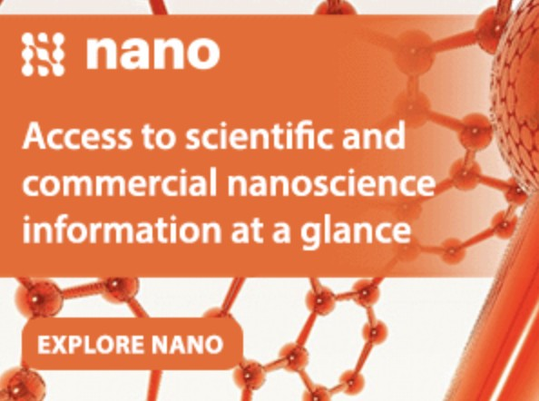

The U.N. celebrates a regulatory debacle
Henry I.Miller & Gregory Conko
Received 01 Mar 2021, Accepted 29 Oct 2021, Published online: 10 Dec 2021
During the early 2000s, delegates to the U.N.-sponsored Convention on Biological Diversity negotiated a
“biosafety protocol” to regulate the international movement of organisms genetically modified with the
newest, most precise techniques, which they dubbed “living modified organisms,” or LMOs. The protocol is
based on the bogus “precautionary principle,” which dictates that every new product or technology – including, in this case, an improvement over less-precise technologies – must be proven completely safe before it
can be used. Rather than creating a uniform, predictable, and scientifically sound framework for effectively
managing legitimate risks, the U.N.’s biosafety protocol established an amorphous global regulatory process that encourages overly risk-averse, incompetent, or corrupt regulators to hide behind the precautionary principle in delaying or denying approvals. It has become a self-defeating impediment to the development of new and better products. To “celebrate” the 15th anniversary of the Protocol, the UN Environment
Program is seeking articles about various aspects of it, illustrating yet again the poor judgement and audacity of United Nations' programs and officials.
The political elites who advocate bigger and more intrusive government habitually try to use scientific literacy as a rhetorical cudgel to beat down the uncomprehending masses. In doing so, all too often they display
their own ignorance. We were dumbstruck, for example, by this announcement from the United Nations:
To celebrate the 15th anniversary of the entry into force of the Cartagena Protocol on Biosafety, the Secretariat of the Convention on Biodiversity (CBD), part of UN Environment, is seeking articles on key issues of
the Protocol, an international agreement which aims to ensure the safe handling, transport and use of living
modified organisms (LMOs) resulting from modern biotechnology that may have adverse effects on biodiversity.1
That’s rather like the Ford Motor Company heralding the anniversary of the 1958 introduction of the ill-fated Edsel
That’s rather like the Ford Motor Company heralding the anniversary of the 1958 introduction of the ill-fated Edsel
During the early 2000s, delegates to the U.N.-sponsored Convention on Biological Diversity negotiated a
“biosafety protocol” to regulate the international movement of organisms genetically modified with the
newest, most precise techniques, which they dubbed “living modified organisms,” or LMOs.2 The protocol
is based on the bogus “precautionary principle,” which dictates that every new product or technology – including, in this case, an improvement over less-precise technologies – must be proven completely safe
before it can be used.
An ounce of prevention is certainly desirable, but because nothing can be proven completely safe – at
least, not to the standard demanded by many activists and regulators – the precautionary principle has
become a self-defeating impediment to the development of new and better products. Of course, many precautionary principle advocates in the anti-technology environmental movement appear to view that as a
feature, not a bug.
Precautionary regulation shifts the burden of proof from the regulator, who previously had to demonstrate
that a new technology was likely to cause some harm, to the innovator, who must demonstrate that the
technology will not cause harm under any circumstances.
This change is ominous, because it raises the conundrum of how much is enough and frees regulatory
bodies to require any amount and kind of testing that they wish. Rather than creating a uniform, predictable, and scientifically sound framework for effectively managing legitimate risks, the U.N.’s biosafety protocol established a vague global regulatory process that enables overly risk-averse, incompetent, or corrupt
regulators to hide behind the precautionary principle in delaying or denying approvals.
he Cartagena Protocol reflects earlier and presages later wrong-headed applications of the Precautionary
Principle, including the rejection of badly needed food aid by several African countries (2002–2004) for no
other reason than it contained the very same superior genetically engineered varieties of grain consumed
routinely in North America3; a six-year-long moratorium on approvals of genetically engineered plants
throughout Europe (which began in 1998); and recently (2018), a bizarre, scientifically insupportable decision by the Court of Justice of the European Union (CJEU) that organisms modified with the newest gene
editing techniques fall into the overregulated, arbitrarily defined, non-category of “GMOs.”4
The Cartagena Protocol is by no means the only U.N. project to cause mischief, or worse. In 2003 the
Codex Alimentarius Commission, the joint food-standards program of the U.N.’s World Health Organization
and its Food and Agriculture Organization, singled out only food products made with modern molecular genetic engineering techniques for unscientific and Draconian regulatory procedures and restrictions – regula
tory requirements that cannot be met by conventionally produced foods made with less precise, less predictable technology.5
Overly burdensome standards for genetically engineered foods are ominous not only because of their
direct effects on research and development, but also because they will make beneficial new crop plants unavailable to the resource-poor farmers in less-developed countries who need them most.
Scientists worldwide have agreed for decades that molecular genetic engineering is merely a refinement, or
improvement, over less-precise and predictable genetic techniques that have been used for centuries, an
exquisite tool that can help in the development of plants with higher yields and innovative traits.6 Thousands of greenhouse and field studies, as well as widespread commercialization in a half-dozen advanced
countries (and on a limited basis in a couple dozen less-developed countries), have documented that the
risks of genetically engineered plants and foods are minimal, their benefits palpable, and their future potential extraordinary. Globally, the adoption of genetically engineered crops annually reduces pesticide use by
tens of millions of pounds and prevents the erosion of millions of tons of topsoil.7
In less-developed countries throughout Asia and Africa, the few available genetically engineered plant varieties have increased crop yields, raised the income of resource-poor farmers, and reduced occupational
exposure to chemical pesticides. Wider adoption and diffusion of genetically engineered crops could improve human nutrition, reduce the amount of land and water needed to produce food, and spare ecosystems from fragmentation and development. But these advances are being drastically limited by the malign
influence of unscientific, hugely burdensome, U.N.-based (as well as national) regulatory regimes.
The U.N.’s precautionary principle-driven standards and regulations actually harm the environment and
public health, stifling the development of environmentally friendly innovations that can increase agricultural
productivity, help clean up toxic wastes, conserve water, supplant agricultural chemicals, and reduce the
contamination of grain by fungal toxins.
Many U.N. experts themselves warn that the greatest single threat to the planet’s environment comes from
the world’s burgeoning population and its demand that ever more land and freshwater for irrigation be devoted to food production. But the regulatory regimes promoted by various U.N. agencies and programs
deny less developed countries precisely the kinds of technologies they need.
How do such travesties of regulation arise? Through a kind of “Emperor’s New Clothes” process in which
self-interested participants move a flawed proposal through the stepwise approval process, all the while
pretending that it makes sense. But although the process appears to be legitimate and transparent, it is
corrupt. The U.N. uses various kinds of coercion to induce countries to sign on to agreements like the Cartagena Protocol and the Codex standards, which regulate genetic engineering excessively and unscientifically.
Sponsor


Advertisement